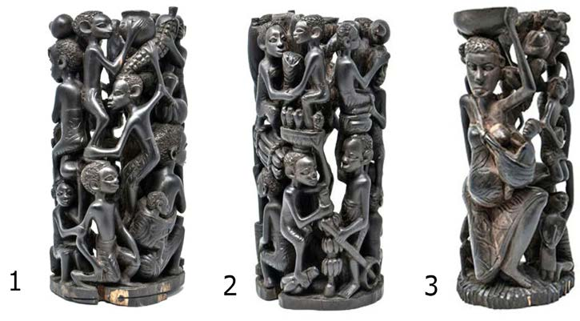

Namba ya kirumi ya tatu. Uchongaji. Uchongaji wa vitu kama vile vinyago ulifanyika ili kuonesha maisha mbalimbali ya jamii. Kuna vinyago vilivyochongwa ili kusisitiza umoja, ushirikiano au upole. Vingine vilionesha heshima, utii kwa wakubwa, kusaidia wasiojiweza na kupendana. Mbinu hii ilisaidia kutoa taarifa na kutunza kumbukumbu za jamii kwani vinyago vilidumu hadi vizazi vilivyofuata, hasa vile vilivyochongwa kwenye mti mgumu au jiwe. Kielelezo namba 2, kinawasilisha vinyago vyenye kutoa ujumbe wa maadili ya jamii.

Kielelezo namba 2: Vinyago vyenye ujumbe wa mila na desturi za jamii
Swali la kwanza. Orodhesha vitu unavyoviona katika picha namba 1, 2 na 3.
Swali la pili. Eleza tafsiri ya vitu ulivyoorodhesha katika swali la 1.
Namba ya kirumi ya nne. Simulizi. Simulizi mbalimbali kama vile, riwaya (hadithi), tamthiliya, michezo ya kuigiza, ushairi, na ngano zenye maudhui mahususi ya maadili kwa jamii zilitumika kukuza na kutunza maadili ya jamii husika. Simulizi hizi ziliwafundisha watu maadili ya jamii. Kadiri simulizi zilivyosimuliwa, zilirithishwa kizazi kimoja hadi kingine.